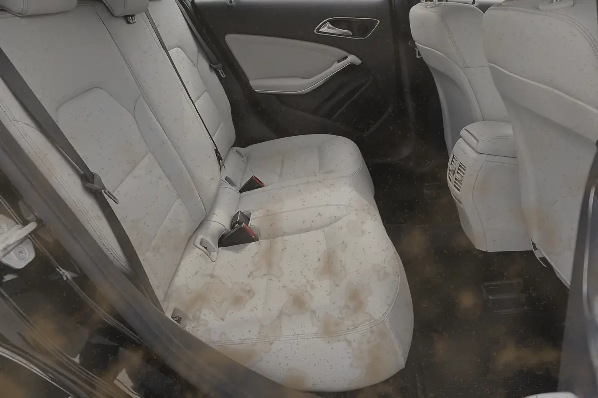
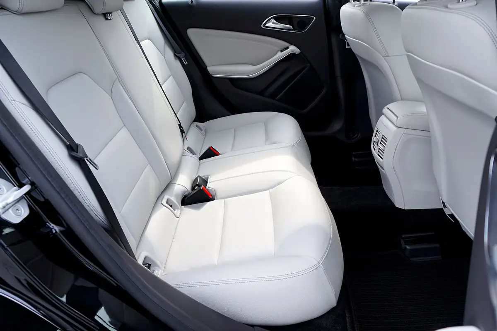
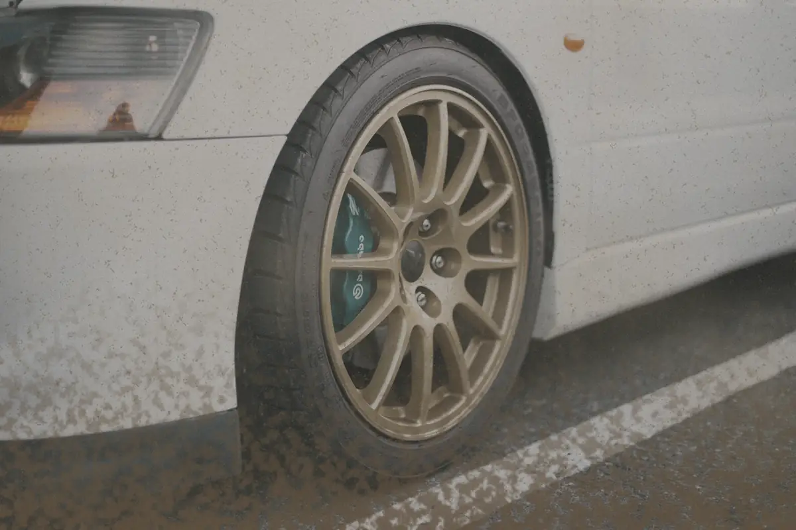
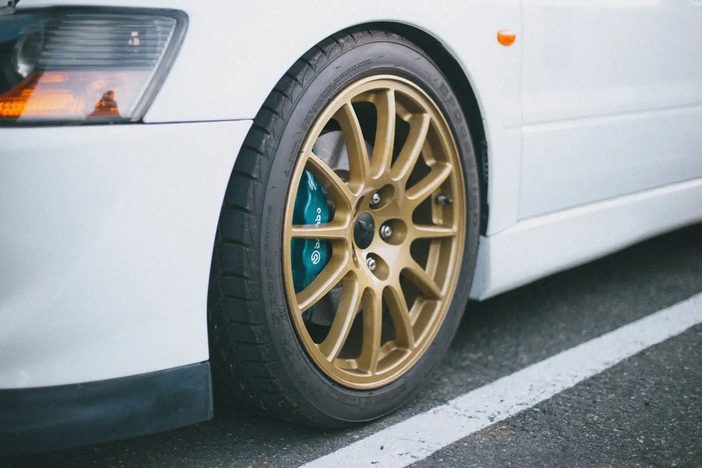
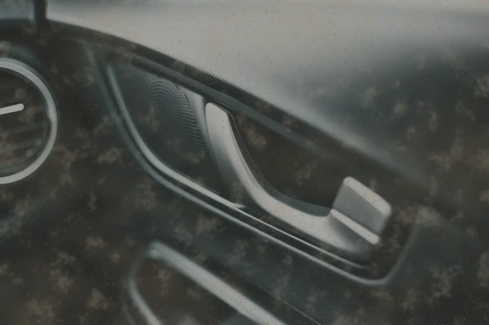
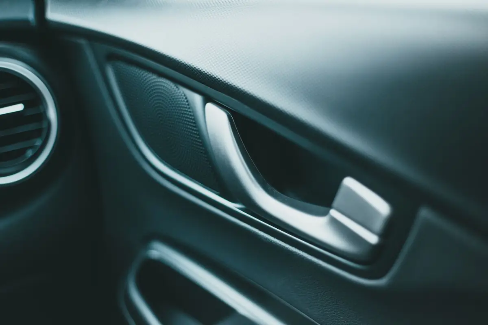
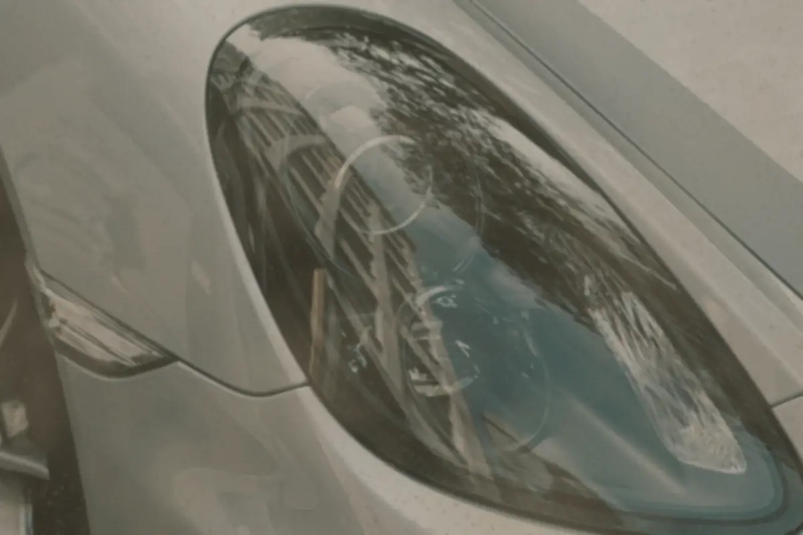
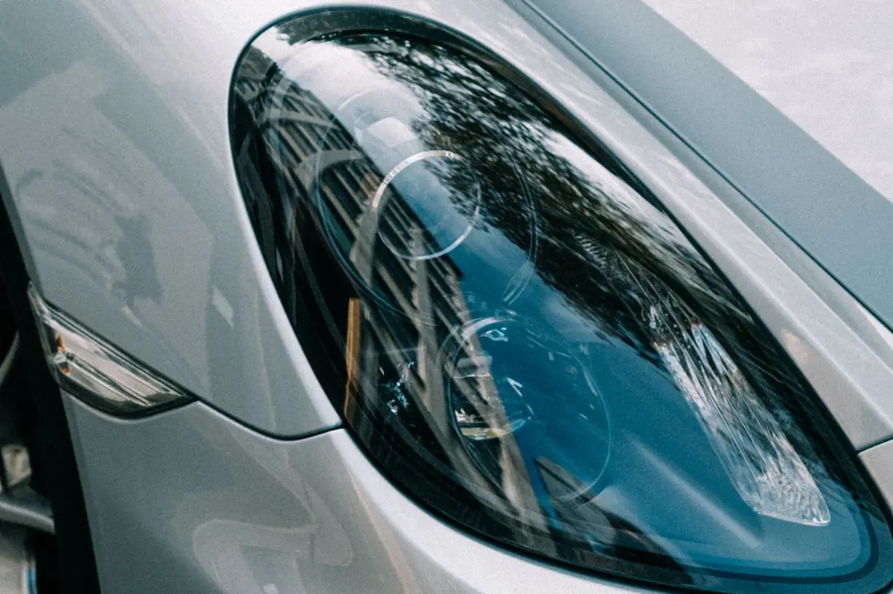

BRÍO basic
desde25 €
Unos 45 min · Exterior
Para tenerlo limpio entre lavados grandes.
- Prelavado con espuma activa
- Lavado a mano con manopla y dos cubos
- Llantas y neumáticos
- Secado con microfibra, sin marcas
- Cristales por fuera
Lavo yo, un coche cada vez. Y desmonto los asientos si hace falta.
4,9 ★ (ejemplo)87 reseñas de ejemploLéelas


DespuésAntesImagen de ejemploBRÍO basic desde 25 €, BRÍO premium desde 50 € y BRÍO deluxe desde 90 €. El precio depende del tamaño y del estado del coche: te lo confirmo antes de empezar. Con cita previa por WhatsApp o llamada.
desde25 €
Unos 45 min · Exterior
Para tenerlo limpio entre lavados grandes.
desde50 €
Unos 90 min · Dentro y fuera
El de cada mes: por fuera y por dentro.
Todo lo del basic, y además:
desde90 €
Unos 3-4 h · A fondo
Para que lo recojas y no lo reconozcas.
Todo lo del premium, y además:
¿Con ozono, faros o recogida? Crea tu lavado y mira el total
Es la Tarjeta Brío. Pregúntale a Nico por ella en tu próximo lavado.
Sí. Brío Car Wash tiene servicio de recogida y entrega del vehículo en Sevilla. Escribes, lo recojo, lo lavo a mano y te lo devuelvo. La zona y el coste te los digo por WhatsApp según dónde estés.
Arrastra y mira. Es el cambio que busco en cada coche: que lo recojas y dudes. Los paneles, las llantas y los faros son lo que más se nota.


DespuésAntesImagen de ejemplo

DespuésAntesImagen de ejemploUn coche cada vez. Por eso se nota.
Así limpio la tapiceríaFotos de ejemplo mientras llegan los trabajos reales de Nico.

DespuésAntesImagen de ejemploSe añaden a cualquier BRÍO o se piden sueltos.
También: tratamiento antilluvia (10 €), para que el agua resbale en el cristal, y alfombrillas a medida: impermeables, de fácil limpieza y en varios colores.
Un coche cada vez. En el local solo cabe uno, así que aquí no hay túnel, ni cola, ni prisa. Si hace falta, desmonto los asientos. Sí, todos.
Lo que más me gusta es el momento en que lo recoges y no lo reconoces.
4,9 ★ (ejemplo)87 reseñas de ejemplo
«Lo han dejado como nuevo. Los asientos eran irreconocibles.»
Reseña de ejemplo · 5 ★«Me alegra que te guste. Ese asiento nos dio guerra, pero mereció la pena.»
Nico, respuesta de ejemplo«Buen trabajo, serio y con servicio de recogida y entrega.»
Reseña de ejemplo · 5 ★«Excelente servicio, puntuales y detallistas.»
Reseña de ejemplo · 5 ★En Brío Car Wash, en C. de la Muestra, 12, 41000 Sevilla. Lavo a mano, un coche cada vez y con cita previa. Nota y reseñas de ejemplo en esta web de muestra.
BRÍO basic desde 25 €, BRÍO premium desde 50 € y BRÍO deluxe desde 90 €. Son precios orientativos: el precio final lo confirmo después de ver el coche. El ozono cuesta 25 € y el tratamiento antilluvia, 10 €.
BRÍO basic es el exterior a mano: espuma activa, lavado con manopla, llantas, secado y cristales (unos 45 min). BRÍO premium suma el interior: aspirado, salpicadero, plásticos, paneles de puerta y cristales por dentro (unos 90 min). BRÍO deluxe añade la tapicería a fondo con inyección y extracción, desmontando asientos si hace falta, moquetas, bajos y cera protectora (unas 3-4 h).
Sí, hay servicio de recogida y entrega del vehículo. La zona y el coste dependen de dónde estés: escríbeme al 955 000 000 y te lo digo.
Sí, se trabaja con cita previa por WhatsApp o llamada al 955 000 000. Abrimos de lunes a viernes de 9:00 a 19:00 y los sábados de 9:00 a 14:00.
Sí: la Tarjeta Brío. Cada 10 lavados, 1 BRÍO basic gratis.
C. de la Muestra, 1241000 Sevilla
Centro de estética para el vehículo. Con cita previa: 955 000 000.
| Lunes | 9:00 a 19:00 |
|---|---|
| Martes | 9:00 a 19:00 |
| Miércoles | 9:00 a 19:00 |
| Jueves | 9:00 a 19:00 |
| Viernes | 9:00 a 19:00 |
| Sábado | 9:00 a 14:00 |
Pide cita por WhatsApp: se trabaja con cita previa.
Elige el nivel, añade extras y mira el total. Te dejo el WhatsApp escrito para pedir cita. ¿Prefieres hablar? Llama al 955 000 000.